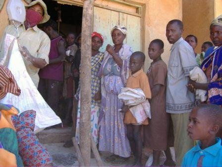
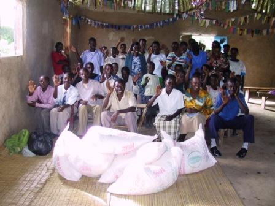

KCC 2006 Famine Relief Program
Start date: April 2006
Summary
Preamble
Current Situation
KCC Response
Looking Ahead
Update June 17th
Update September 23th
Update October 21st
Update December
Summary
People in Rakai district have mostly managed to grow sufficient food.
This year, however, there is a terrible drought.
Planted crops withered and died.
It has not been this bad since 1992.
The Kibaale Childrens Centre (KCC) has started food assistance to over 400
families.
This has helped them through the most difficult period.
However, we expect the families to run out of food again after August,
by the end of the dry season.
We need to prepare to help the children and their families again.
Preamble
The people of Uganda, though continuously struggling with poverty, have
generally had the ability to grow a small variety of crops which ensured that
they would have enough to eat. Famine and starvation have not been much of a
problem in Uganda in the past years. Families may have lacked food more often
due to the deaths (AIDS, war) of the providers/farmers more so than due to
unfavourable agricultural conditions.
During the past few years the Kibaale Children's Fund (sponsorship program) of
Kibaale Community Centre has occasionally helped (with sponsor funds) some very
needy KCF families for a few weeks during gaps between the harvesting of
different crops. This may have been 20 or 30 families from our Kibaale
Community Schools.
Current Situation
Children and adults have been facing an extremely tough situation. Local long
term residents keep repeating in disbelief that they have never seen such a
terrible drought. Some remember a similar drought in 1992 that was also
severe. This current drought doesn't seem to be widespread across the
country, but predominately in Rakai District and into some neighbouring
districts. The main rainy seasons in this area are Sept - Nov then Feb - Apr.
November 2005 rainy season was disappointing and rainfall was much less than
usual. The February 2006 rains didn't come at all until April and the rain
was of a short duration. There was a celebratory feeling for a few weeks and
some children may have written enthusiastically to sponsors that we now have
rain, but it wasn't sufficient. Many crops were planted in Feb in
anticipation of rain, but plants withered and died. Some, who were able,
replanted in early April, but those crops are now dying before maturing and
producing food. Currently, the only crops that are going to be of any benefit
are matooke (cooking bananas) and potatoes - though both crops will be of a
much lower yield than normal. Main food crops that seem to be completely
failing are beans, sweet potatoes, and maize. Other crops of fruits and
vegetables are also severely affected. Many families also depend on a few
cows for milk and beef - these cows have also suffered due to lack of feed and
finding water is a very big problem. On top of that, cattle of Rakai district
have been quarantined due to hoof and mouth disease.
Food prices have also increased significantly.
One year ago: dried beans - 400 Sh per kg, matooke (cooking bananas) - 2000
Sh per bunch, maize flour - 400 Sh per kg.
Today: beans - 1,500 Sh per kg., matooke - 6000 Sh per bunch, maize flour-
900 Sh per kg
For families who even have a bit of cash, this has been a very big financial
burden.
A few weeks ago a visit was made to a neighbouring clinic about 20 kms away.
In discussion with the head clinician, we began talking about the drought. He
reported that already he had seen significant weight loss in many of the
children. We anticipate an increase in deaths in the area - not yet directly
due to starvation, but of people who are sick, HIV positive, elderly or
weakened and that they are not getting proper nutrition to fight their
illness.
KCC Response
Thankfully, we have been blessed with donations to help us cope with this
tragic situation. It is also an opportunity to express the love of Christ to
those in need. . Our students are even more thankful than usual for the good
lunch of beans and posho (cooked maize flour) we feed to them at school.
Over the past 2 months, the KCF office has been giving food assistance to over
400 of our student's families! That is 10 times the former need. The
usual food that we give out is maize flour which is then cooked as a stiff
porridge. We commonly give a family (depending on the number of people)
around 15-20 KG of flour every 2 weeks. Each kilo cost approximately 50 cents
Canadian (800 Ug. Shillings). In the first month of distribution we also
bought some sacks of beans in order to give a more nutritionally balanced
diet. Due to the increased demand for assistance, we discontinued purchasing
beans and have been giving maize flour only.
On a certain day, families are told to meet at a shop in town where the owner
has pre-bought many sacks of maize flour. Families had been given a voucher
from the KCF office for a certain number of kilograms. Happy for the
assistance and relief, most don't like being dependent, but would much rather
be able to provide for their families themselves. It is a humbling experience
for them.

June 16th distribution
Because of the severity and because of the donations made available, we have
been helping more than just our school families. Knowing we can't help
everyone in the whole community, we one time decided to contact some of the
local churches and distributed maize flour through them. Their appreciation
was overwhelming. They clapped and danced and I'm sure many mothers were
crying with relief within their hearts that they had something to give to
their children for supper.
15 local churches (within approx 20 km radius) were given between 1 and 4 sacks of 50 KG (40,000+ Ug shillings per sack) of maize flour depending on the size of the congregation and the level of need.
| Name of Church |
Sacks |
Name of Church |
Sacks |
| Kyempewo | 1 |
Byakabanda | 4 |
| Nakawama | 2 |
Rakai Full Gospel | 2 |
| Kibaale | 4 |
Rakai Calvary Temple | 1 |
| Kigumba | 2 |
Busenyi | 2 |
| Sanje | 2 |
Kibanda | 2 |
| Lubinda | 3 |
Lwensambya | 3 |
| Magabirano | 2 |
Kijonjo | 2 |
| Ndagga | 2 |
| |
| |
Total | 35 |
From Kawalya Cephas, coordinator for Food Distribution:
"I wish to convey my sincere appreciation to the Directors of KCC, Uncle Ray,
and the compassionate friends in Canada who have contributed toward the food
relief to the starving people of this community as a result of a long drought.
May the almighty bless you? we are also very impressed that the program has
reached the community, beginning from 15 churches"
He also reported that very many people, including local leaders, of the area
are expressing thanks and appreciation for the assistance even if they
themselves have not received food.

Food Aid through local churches
| Total food assistance for April & May 2006 |
24,725,600 |
(Approx $15,000 Can)
(2 mil+ was for churches) |
| June 16th Distribution Day |
6,000,000 |
(Approx $4,000 Can) |
(coincidently Jun 16th is the Int'l "Day of the African Child")
Looking Ahead
Because of the April rains and the positive effect on the matooke crop, we
expect a very big drop in the need for food assistance during the months of
July and August. Families will have a little reprieve if they have planted
potatoes and own matooke plantation. Because of the loss of other crops, we
expect the need for food assistance to shoot up again by September.
There may be a worry that people will become dependant on us and take
advantage of 'free food' even if they don't need it. This is not very likely.
As the local pastor prayed for rain last week, "Lord, we are thankful for
help, but we need our own harvest!" People here do not usually ask for food
unless they really, really need it. It is more likely that people of this
community bring gifts of food to teachers, nurses and other staff of KCC in
appreciation for the work and service they are rendering to them.
The next expected rains will be around October and therefore, it won't be
until early 2007 that another harvest will be ready. It is likely that
families will be in tremendous need from September 2006 up until January 2007.
If the need then is similar to what it has been in the past 2 months, we will
be assisting 400 families for a cost of approx 12,000,000 per month ($8000
Can).
We are currently attempting to meet with district officials concerned (or who
should be concerned) with Food Relief. Hopefully, they are doing something to
also get food aid for residents of Rakai district. If there is any
possibility of obtaining other assistance through other organisations such as
World Food Program perhaps we can be a part of that. However, there are
reports that in the 1992 drought, the food distribution that came through the
government was fraught with corruption and government officials benefited
greatly.
May God richly bless each one who has generously given to help their African
brothers and sisters
Jackie Ammeter
Director of Community Development
KCC
Update June 17th
I was able to have a very brief meeting with the District
govt. official in charge of Disaster relief. He reported that a letter was
written to the Prime Minister's Office two months ago stating the need for
food assistance, but no reply has been received. The District office has
promised to avail us with some concrete data which may help in contacting
other organisations for help. This will probably take many weeks or even
months.
Update September 23th
Hi everybody,
Oh, hallelujah, we have had three beautiful downpours in the past
week. It was so unbelievable and joyful. Thank you for praying for
us. Hope has been restored, but in order to put a real end to a 3
year drought it will have to rain for weeks on end.
People have been suffering badly still with some dying, maybe not
clinically of starvation, but from other sickness that they are too
weak to fight off. Many, many cases of dysentery in our clinic.
We are giving out seeds (maize and beans) to hundreds of families with
the hopes that these rains will continue through November. Hopefully
there will be some harvesting by December, but we are preparing for
the highest level of food need between now and then. The "oldtimers"
of this area don't remember every facing such a catastrophe.
So, thanks again for all the support and continue to pray for the
workers here in Kibaale as it is very tough to face desperate families
day after day. We are trying to keep holding our finger in the dike!
God bless
Jackie
Update October 21st
The famine and drought continue to worsen. Yes, we have been getting a bit of
rain, but a shower once a week is far from adequate. We should be getting 2
or 3 hours of rain every other day for two months straight in order to bring
everything back to life. People are actually beginning to die of hunger.
Everyday we are having hungry and needy people coming for help. I can't
really describe the difficulty of the situation. On Monday, about 20 people
came to the community development office pleading for help. Justine came and
told me about the most heart-wrenching case of the day: a 10 year old girl
came asking for food for herself and for her siblings aged 8, 6, and 4 whom
she was looking after. Their parents had died and they were living with a
grandmother who was currently in the hospital. They hadn't eaten in 3 or
4 days. Justine said the girl was just shaking.
We also had a grandfather who was caring for
a baby grandchild. He had no milk to give the baby. We gave him 6,000
(about $4) to buy milk for one month. The needs are endless and people are
now saying the crisis far surpasses that of 1992.
Jackie Ammeter
Ray Sutton summarizes the situation in
this letter (PDF) and asks for your help!
Update December
Finally Kibaale is getting good rain! This means the farmers will be able to
start harvest in a few months. There still will be famine until then, the
project will continue handing out food.
There is still a problem with water supply. The overal water level is
terribly low. We can't compute what the effect will be, but the river has
never been this low and it can take several years to go back to normal.
For most people this means they will have to walk a long distance to fetch
water.
|